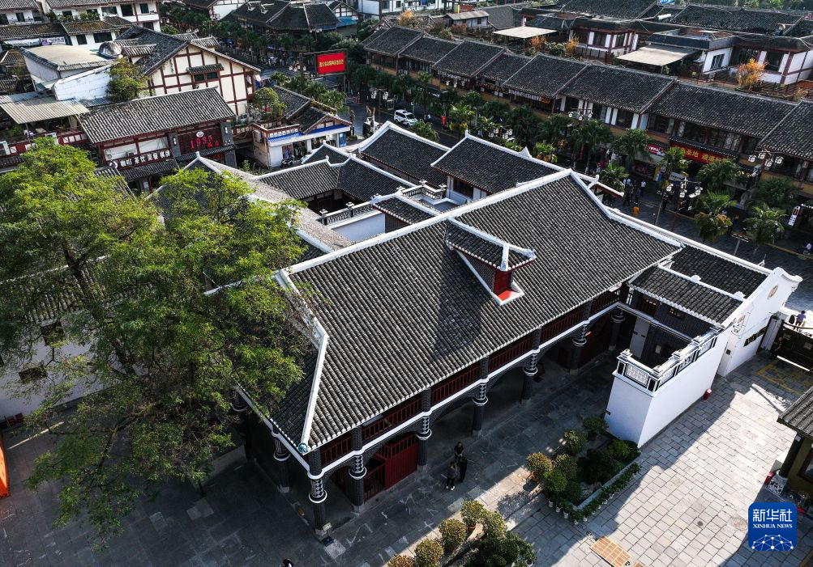
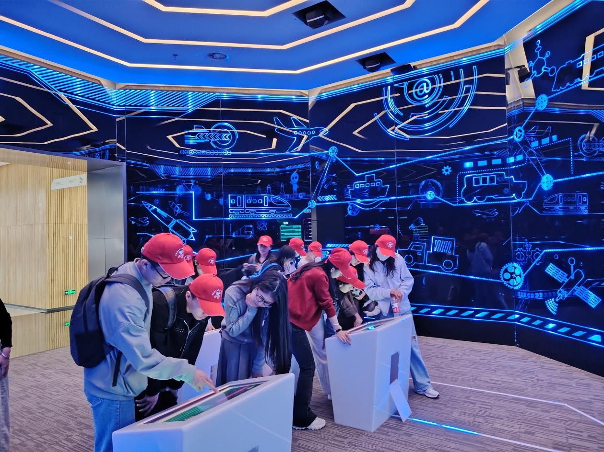

各地持续开展党史学习教育现场教学活动
近期，多地依托革命旧址和纪念场馆开展现场教学，通过专题讲解、情景体验等方式推动党史学习教育走深走实，增强学习感染力。
Red Culture News
关注党史学习、红色文化传播和革命纪念场馆动态，记录值得了解的新内容。
News & Updates
关注近期党史学习、红色教育和革命场馆相关动态，及时了解值得留意的学习信息。
近期，多地依托革命旧址和纪念场馆开展现场教学，通过专题讲解、情景体验等方式推动党史学习教育走深走实，增强学习感染力。
部分红色场馆上线虚拟展厅、语音导览和数字档案，让观众通过线上方式了解革命历史，进一步拓宽红色文化传播渠道。
越来越多青年加入红色场馆志愿讲解队伍，用鲜活语言讲述党史故事，在服务实践中加深对革命精神的理解和认同。
长征沿线红色资源加快联动，主题研学线路串联重要历史节点，为公众提供更加完整、连贯的长征历史学习体验。
Learning Features
通过专题解读与深度文章，梳理党史中的重要事件、精神内涵和传播方式。

来源：新华社遵义会议是中国革命生死攸关的伟大转折点。第五次反“围剿”中，“左”倾教条主义的错误指挥让红军蒙受巨大损失，被迫踏上长征。危急时刻召开的遵义会议，纠正了军事与组织上的错误，重新确立正确领导。
这是党第一次独立自主运用马克思主义解决自身问题，标志着中国共产党走向成熟，挽救了党、红军与中国革命。回望这段历史，我们可以深刻理解实事求是的内涵。它启示新时代青年，遇到困境要立足实际、坚持真理，在考验中坚守信念、寻找出路。
长征精神，是红军在万里征程中淬炼出的宝贵精神财富。二万五千里长征路上，红军面对敌人围追堵截与严酷自然环境，跨越雪山草地，凭借钢铁意志完成伟大远征，铸就了不朽的精神丰碑。
长征精神包含坚定理想、不怕牺牲、团结奋斗等品质，至今仍有强大生命力。当代青年在学习科研、成长实践中总会遭遇挫折。长征精神能够鼓舞我们直面困难，锤炼坚韧品格。读懂长征精神，就是传承初心使命，从中汲取力量，扛起属于青年的时代责任。

来源：昆明理工大学马克思主义学院官网数字技术为红色文化传承带来新的传播方式。传统红色学习受场地、时间限制，而数字档案、虚拟展馆、交互叙事打破地域壁垒，足不出户就能沉浸式感受革命历史，浏览珍贵文物史料。
数字化手段将厚重史料转化为青年喜爱的交互内容，同时对老旧文献、口述资料进行长久保存。但数字化传播必须坚守史实底线，拒绝娱乐化改编。合理运用数字工具，可以拓宽红色文化传播边界，让红色故事以年轻化的形式走进大众，持续传承红色血脉。
通过 20 道选择题回顾党史与长征的重要知识点，系统会自动保存你的答题进度。
Resource Guide
精选书籍、纪录片和线上展馆资源，为日常学习与延伸阅读提供参考。
以简明脉络梳理中国共产党百年奋斗历程，适合作为系统学习党史的基础读本。
通过历史影像与亲历者叙述，再现红军长征途中的重大事件和艰苦历程。
通过网络展陈了解党的不懈奋斗史、不怕牺牲史、理论探索史、为民造福史和自身建设史。
系统讲述红军长征的历史背景、行军过程和重要战役，适合进一步拓展专题阅读。
Knowledge Quiz
第 1 / 20 题
答对 0 题
答题完成
本次问答已完成，可以重新答题再次巩固知识点。